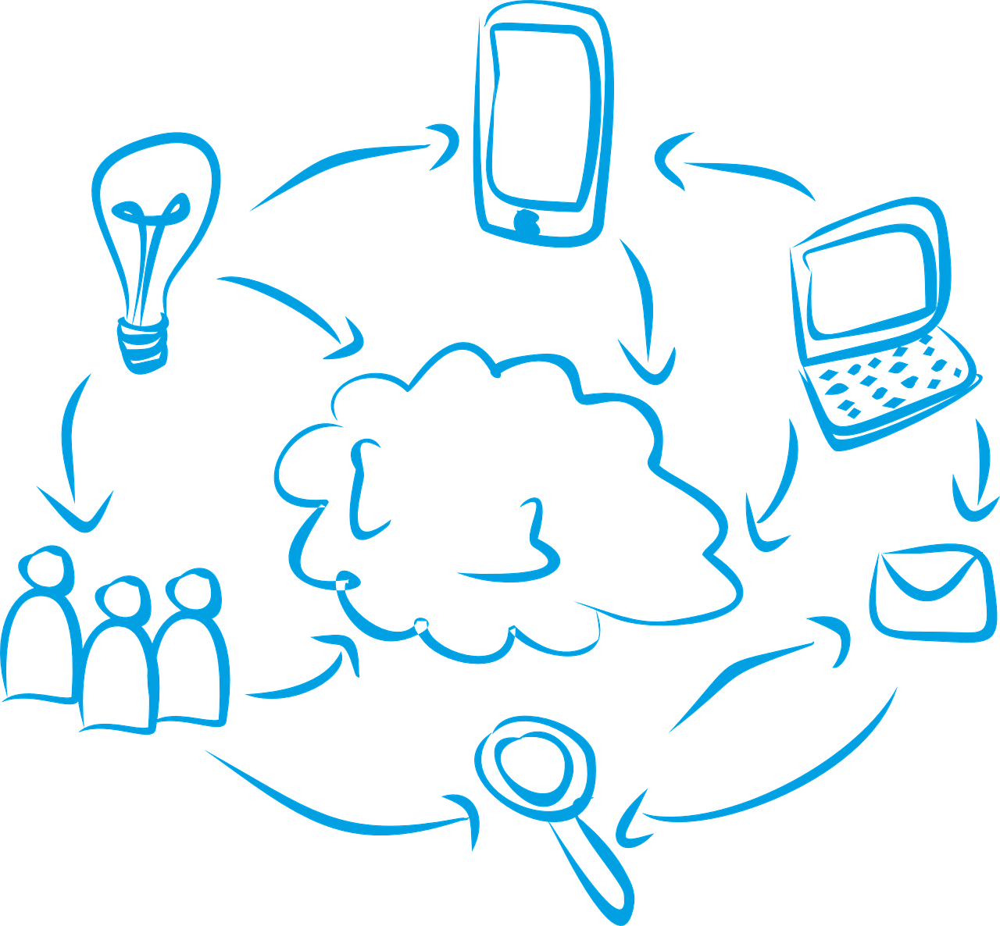
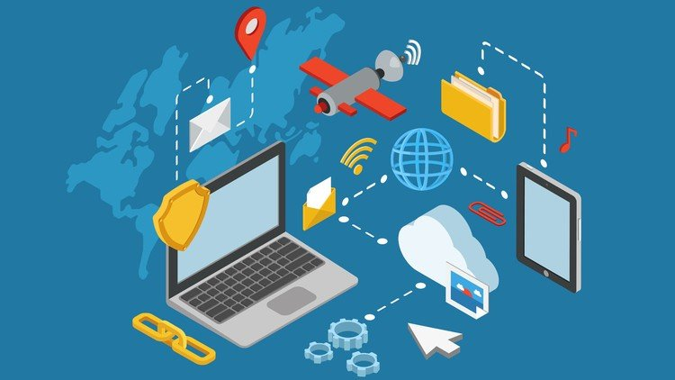

Hva er digitale nettverk?
Et digitalt nettverk kobler sammen digitale enheter, som telefoner, datamaskiner og andre smartenheter, sånn at de kan kommunisere og dele data. Alle enhetene har ett nettverkskort som gjør det mulig å kobles til nettverket. I hjemmenettverk brukes en ruter som kobler sammen enhetene og gir tilgang til internett. Kommunikasjonen er vanligvis trådløst gjennom WLAN (Wireless Local Area Network) også kjent som Wi-Fi, men kan også skje via kabler som Ethernet.

